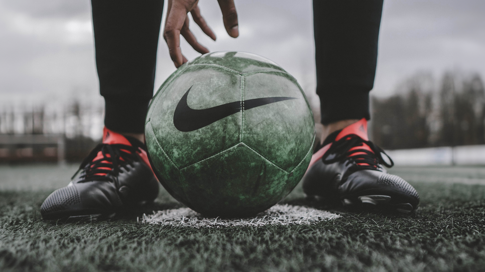

.ფეხბურთი — გუნდური სპორტი, რომელშიც თერთმეტი წევრისგან შემდგარი ორი გუნდი ეთამაშება ერთმანეთს. თამაში მიმდინარეობს მართკუთხა მინდორზე საგოლე კარით ორივე ბოლოში. თამაშის მიზანი გუნდის წევრებს შორის ბურთით მანევრირებაა მოწინააღმდეგე გუნდის კარში გოლის გასატანად. ამ სპორტის მთავარი დამახასიათებელი წესის მიხედვით, მოთამაშეებს, მეკარის გარდა, ბურთზე ხელის ან მკლავის გამოყენების უფლება არ აქვთ თამაშის პერიოდში. მატჩის გამარჯვებული ის გუნდია, რომელიც უფრო მეტ გოლს გაიტანს თამაშის ბოლომდე. ფეხბურთში არის ერთი მთავარი და ოთხი დამხმარე მსაჯი, აქედან 2 გვერდითი არბიტრი, 2 პირითი ხაზის დამხმარე მსაჯი. მთავარ მსაჯს აქვს უფლება მიიღოს გადაწყვეტილება – დააჯარიმოს თუ არა გუნდი კონკრეტულ ეპიზოდში თამაშის წესების დარღვევისთვის. მსაჯს შეუძლია ფეხბურთელს უჩვენოს ყვითელი ან წითელი ბარათი. ეს იმაზეა დამოკიდებული თუ რამდენად უხეშად ითამაშა ფეხბურთელმა. მსაჯის მიერ ყვითელი ბარათის ორჯერ ან პირდაპირ წითელი ბარათის ჩვენების შემთხვევაში ფეხბურთელი ტოვებს მინდორს და ავტომატურად ტოვებს მისი გუნდის მომდევნო შეხვედრასაც იმ კონკრეტულ ტურნირზე, სადაც მიიღო წითელი ბარათი. იმ შემთხვევაში თუ წითელი ბარათი ფეხბურთელმა არასპორტული საქციელის გამო მიიღო, შესაძლოა მას რამდენიმე თამაშის გამოტოვებაც მოუწიოს (მისი საკითხი განიხილება უეფას ან ფიფას სადისციპლინო კომიტეტზე).